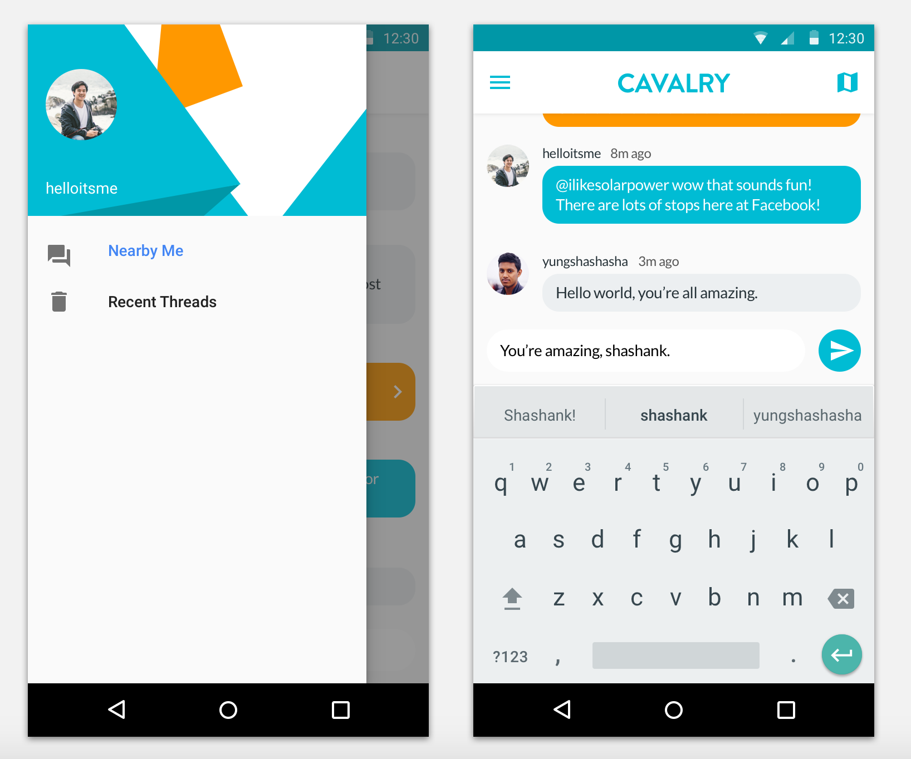
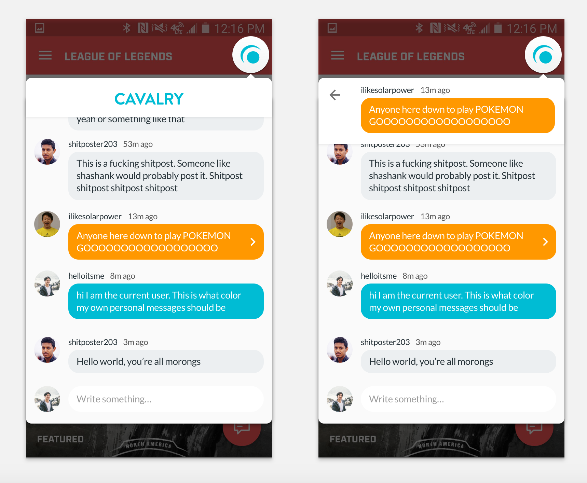
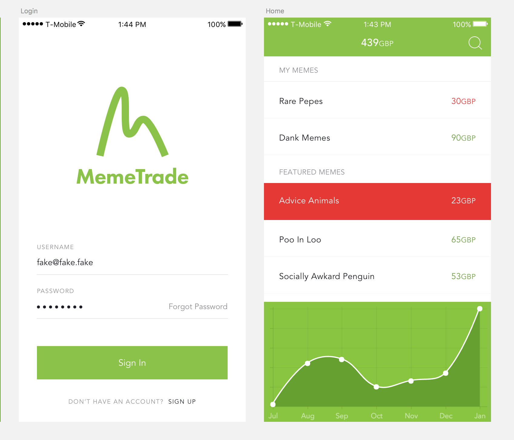

In addition to organizing hackathons, I often particpate in them. I usually take on the role of PM and Designer, occasionally writing front end and mobile code when necessary. Here are a few screenshots and mocks from some projects I've done at various hackathons.






Some other projects include:
KramerBot: Downloaded about 20,000 of my messages with a friend and used Markov chain triples to make an online bot that would "talk" like him, complete with the option to choose what years his messages would be generated from. This project generated a lot of laughs and was unfortunately taken offline after my friend decided to clean his online presence to prepare for a career in politics.
CSUAChatifier: I downloaded about 8000 messages from my club's (the Comptuter Science Undergraduate Association) group chat, parsed it and then used markov chain triples to make a webapp that generated messages based on our chat. Quick solo Hack at the CSUA Hackathon Fall 2015.
Twitch Background Song Identifier: Webapp that (supposedly) would tell you what song is playing in the background of a Twitch stream (although it always returned Darude - Sandstorm.) Made solo at HackJam Spring 2015, which I helped organize and taught a Flask workshop at. No copy of this project remains, probably for the best.
IsThereFreeFoodatWoz: Webapp that returned whether or not there was free food at the Wozniak Lounge at UC Berkeley using Facebook Graph API. Made in a group of two at Social Bad Hackathon Spring 2015. My partner and I both won selfie sticks.
Stupid Startup Name Generator: Pretty front end using flask for a friend's startup name generator Python script. Quick solo project made as a promotional site for the Social Bad hackathon.
LaTech: A quick Mac app that consisted of a webview pointing to ShareLatex.com and injected CSS to look like a native app. Inspired by the Goofy app and made at CSUAHackathon Spring 2015.
The Internet of Door: Hardware hack. An internet connected doorbell that used Twillio to text the owner that someone rang the doorbell. Had a little stepper motor for opening and closing the door, although I managed to break several motors while making the project. Had a cute LCD for displaying happy/rude messages to the person outside. Solo hack made at TreeHacks 2015. Won Intel's Hardware Hack prize, which got me a free pair of Beats headphones.
CloudChat: Simple chat app written in Meteor.js. Mostly made in order to learn Meteor as well as learn how CSS3 styling worked. Made at CSUA Hackathon Fall 2014.
Whallr: My second hack ever, made in a group at Cal Hacks 1.0. Webapp that told users when certain foods were being served at UC Berkeley's dining halls. Although it was never functional, I managed to get the front end done and I still think the design is pretty pretty, especially for my experience at the time.
BerkeleyBord: First hack, done in a small team. Yik Yak clone just for UC Berkeley, written in Python. Won "Prettiest Hack" and "Best Hating on the East Coast" which got me my first Arduino. Made at HackJam Fall 2014.